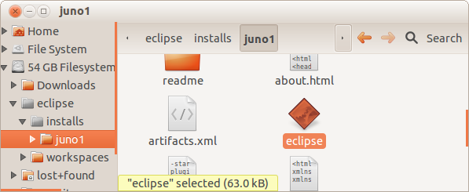

Getting Started
Setting up the IoT-e Development Environment
This document describes how to set up the development environment for IoT-e, which consists of the following components:
- JVM (Java JDK SE 8 or Open JDK 8)
- Eclipse IDE
- IoT-e Workspace setup
The IoT-e development environment may be installed on a Windows or Linux. The setup instructions will be the same across OSs though each system may have unique characteristics.
JVM Installation
Download and install Java SE from Java SE Downloads. Use the latest version of Java SE Development Kit and download the version appropriate for your system.
For additional information regarding the installation of Java 8 on all supported operating systems, see JDK 8 and JRE 8 Installation Guide.
Eclipse IDE
The Eclipse IDE is an open source development tool that consists of an integrated development environment (IDE) and a plug-in system for managing extensions.
For automated installation see Oomph installer below.
Installing Eclipse
Before installing Eclipse, you should choose directory locations for the Eclipse install and its workspaces.
The following points should be kept in mind regarding Eclipse installs and workspaces:
- The directory location of the Eclipse workspaces should be chosen carefully. Once Eclipse is installed and workspaces are created, they should never be moved to another location in the file system.
- There may be multiple installs of Eclipse (of different or similar versions), and single instances of each install can be run simultaneously; but there should never be more that one instance of a specific install running at the same time (to avoid corruption to the Eclipse environment).
- Each workspace should be used with only one Eclipse install. You should avoid opening the workspace from more than one installation of Eclipse.
- For the purposes of this guide, only a single Eclipse installation will be covered.
Download the current distribution of Eclipse for your OS from the Eclipse download site. Choose the Eclipse IDE for Java EE Developers.
The zipped Eclipse file will be downloaded to the local file system and can be saved to a temporary location that can be deleted after Eclipse has been installed. After the file has been downloaded, it should be extracted to the Eclipse installs directory. The following screen capture shows the installation in Linux using an eclipse/installs/ directory. The Eclipse executable will then be found in the “eclipse\installs\eclipse" directory. This installation will be different depending on the operating system.

Because there may potentially be future Eclipse installs extracted into this location, before doing anything else rename the directory, such as to “eclipse/installs/juno1/”. Once you begin using this Eclipse install, it should not be moved or renamed later. 
Installing mToolkit
An additional plugin, mToolkit, is needed to allow remote connectivity to an OSGi framework on a IoT-e-enabled target device. To install mToolkit into Eclipse, use the following steps:
- Open the Help | Install New Software… menu.
- Add the following URL as an update site based on your version of Eclipse
- Eclipse Mars and older: http://mtoolkit-mars.s3-website-us-east-1.amazonaws.com
- Eclipse Neon: http://mtoolkit-neon.s3-website-us-east-1.amazonaws.com
- Install the “mToolkit” feature (you need to uncheck the Group items by category checkbox in order to see the feature)
- Restart Eclipse. In the menu Window | Show View | Other, there should be an mToolkit | Frameworks option. If so, the plugin has been installed correctly.
Oomph installer
Download the latest Eclipse Installer appropriate for your platform from Eclipse Downloads
- Start the Eclipse Installer
- Switch to advanced mode (in simple mode you cannot add the custom installer)
- Select “Eclipse for Committers” and select a JRE 1.8+ -> Next
- Update Eclipse IoT-e Git repository’s username (HTTPS, link to your fork) and customize further settings if you like (e.g. Root install folder, Installation folder name) -> Next
- Leave all Bootstrap Tasks selected -> Finish
- Accept the licenses and unsigned content
- Wait for the installation to finish, a few additional plugins will be installed
- At first startup Eclipse IDE will checkout the code and perform a full build
The result will be installed Eclipse IDE with all the recommended plug-ins already available, code will be checked out and built, workspace will be set up, a few Working Sets will be prepared with most projects building without errors
The next step is to get the rest of the projects to build, for which you might need to build them in the console with specific profiles available e.g. can.